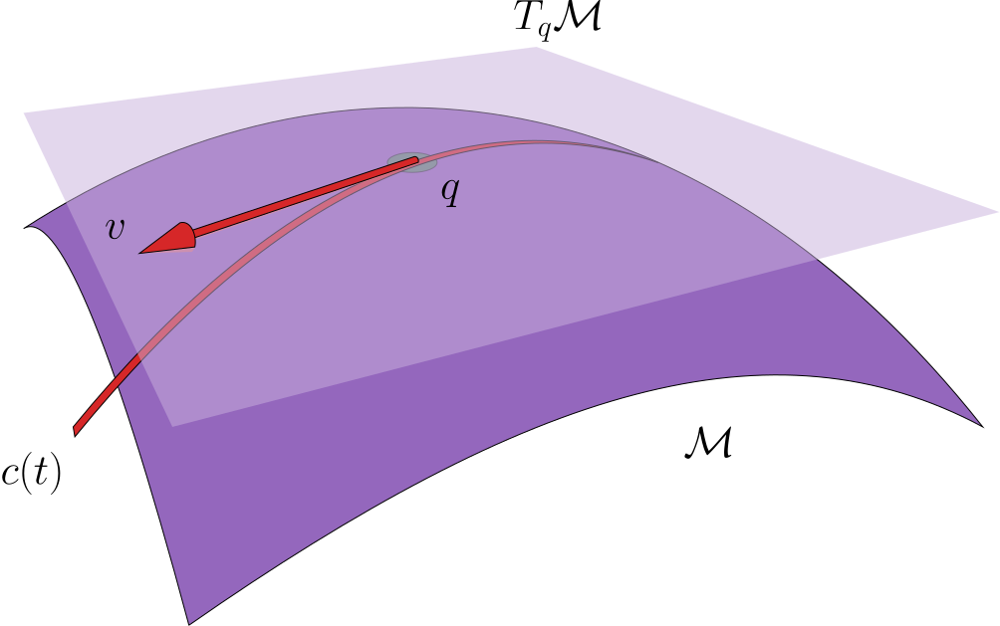

Ambition

Math Goal
By the end of the summer I want to have read all of the following papers and have an outline of my own original contribution.
Foundational & General Approaches
-
A Riemannian Framework for Optimal Transport
- Authors: M. Arjovsky, A. Doucet, et al.
- Develops a geometry-aware framework for OT over manifolds, making PCA-like generalizations more natural in curved spaces.
-
Learning Generative Models with Sinkhorn Divergences
- Authors: Genevay et al.
- While not PCA-specific, this introduces latent representations learned with OT-based losses—relevant for embedding/latent space OT.
PCA-Like and Subspace Methods with OT
-
Wasserstein Principal Geodesic Analysis
- Authors: Seguy, Cuturi
- Generalizes PCA to the Wasserstein space using geodesic analysis, important for structured data like distributions.
-
Wasserstein Principal Component Analysis: Sparse Optimal Transport Based Dimensionality Reduction
- Authors: Wang et al.
- An explicit method for Wasserstein PCA, adapted for probability distributions rather than Euclidean vectors.
-
A New Formulation of Principal Geodesic Analysis in the Wasserstein Space
- Authors: Bigot et al.
- Focuses on computing principal components in Wasserstein space more efficiently, relevant for shape and distributional data.
Embedded Manifolds & Latent OT
-
Learning Optimal Transport Maps using Generative Adversarial Networks
- Introduces learning OT in latent/embedded spaces, allowing for manifold-constrained transport.
-
Learning Optimal Transport for Domain Adaptation
- Authors: Damodaran et al.
- Uses PCA for latent dimensionality reduction, then applies OT—an instance of embedded OT.
-
- Proposes OT over non-Euclidean geometries (e.g., spheres), and matching distributions on these curved spaces.
Autoencoders, Latent Space + OT
-
Sliced-Wasserstein Autoencoders
- Uses Sliced-Wasserstein distance in a latent representation learning setting.
-
Autoencoding Probabilistic PCA with Optimal Transport
- Combines PCA, probabilistic models, and OT regularization.
Other Notable Contributions
-
Wasserstein Dictionary Learning
- Extends PCA to the OT setting via sparse dictionary learning over probability distributions.
-
Sliced-Wasserstein Flow: Nonparametric Generative Modeling via Optimal Transport and Diffusions
- Uses diffusion + OT to generate data in embedded spaces, related to low-dimensional transport learning.
Summary of Concepts
| Concept | Relation to OT |
| ------------------------- | ----------------------------------------- |
| Wasserstein PCA | PCA in probability/measure space |
| Geodesic PCA (PGA) | PCA generalized to curved OT geometry |
| Latent OT / Embedded OT | OT after PCA or in learned subspaces |
| Sliced Wasserstein | Efficient approximation of OT for high-D |
| Manifold OT | Optimal transport on Riemannian manifolds |
| Autoencoding + OT | Embedding generation with OT-based loss |